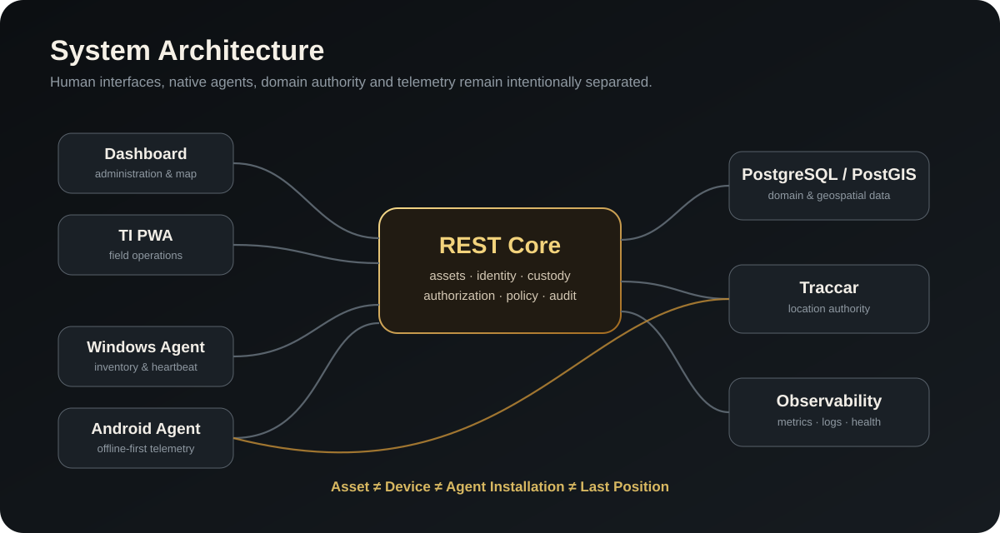

THE PROBLEM
Identidade, patrimônio e posição não são a mesma coisa.
O projeto nasceu de uma pergunta simples: como manter coerência quando um ativo possui um dispositivo, uma instalação de agente, um responsável, um local de referência e uma posição dinâmica — todos com ciclos de vida diferentes?
Asset ≠ Device ≠ Agent Installation ≠ Last Position
ARCHITECTURE
Autoridades explícitas, responsabilidades separadas.

ENGINEERING HIGHLIGHTS
Do produto ao runtime.
Identity & Security
OIDC/RBAC para pessoas, credenciais individuais para agentes, DPAPI no Windows, armazenamento seguro no Android e secrets por arquivo.
Telemetry
REST Core como autoridade patrimonial; Traccar como autoridade de localização; PostGIS como suporte geoespacial.
Multi-platform
Dashboard web, PWA de campo, Windows Agent, Android Agent e Linux control plane em uma arquitetura coordenada.
Offline-first
O Android considera falhas de conectividade, fila local e sincronização posterior como parte do desenho operacional.
Recoverability
Backup, restore e rollback são capacidades arquiteturais, não apenas procedimentos documentais.
Governance
Migrations, contratos versionados, baselines e candidatas reduzem regressões entre Core, agentes e interfaces.
MY ROLE
Vinícius Vilaverde
Product & System Architecture
- concepção e direção do produto
- arquitetura de sistemas e domínio
- UX operacional e integrações
- segurança e identidade
- estratégia de agentes e infraestrutura
- governança técnica e evolução de contratos
STACK
FastAPISQLAlchemyPostgreSQLPostGISReactTypeScript.NETKotlinTraccarDockerOIDCPrometheusGrafana
DEEP DIVE